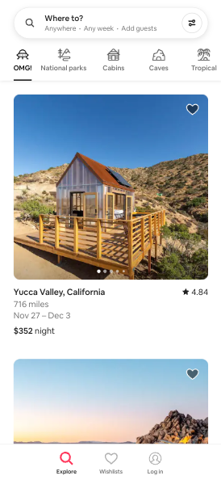
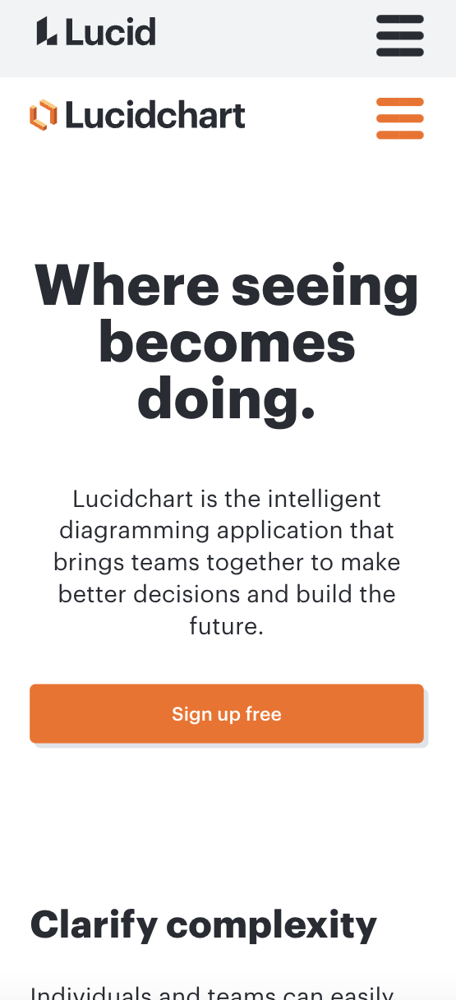

PARC: Alignment
The block distinction between the different airbnb options is a great example of website alignment. The user can clearly see that the image, title, dtates and cost is all visually connected.
Fitt's Law
This website is a good example of applied Fitt's Law because the button to take action takes a large space in the page and the user can quickly get to the target.
PARC: Repetition
The repetition in color scheme, fonts and shapes makes this website a great example of the repetition principle and ties the page theme together.